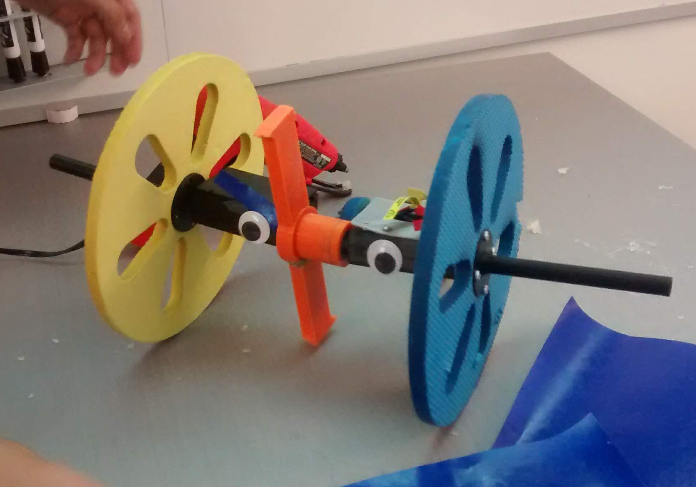
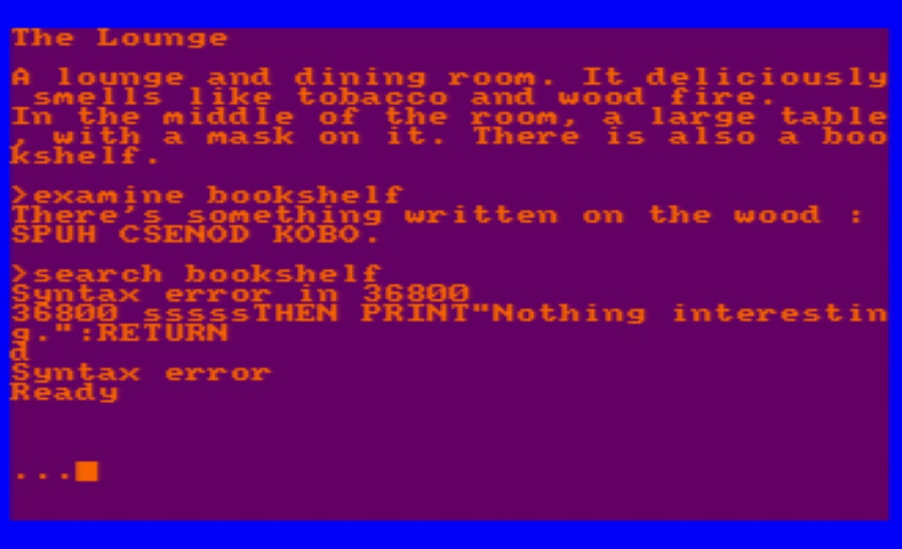

A review of the songs written by Andrew Horowtiz, green tie of the band Tally Hall.
In which I talk about something which I like.
| Words Words Words | |
|
Quotes and passages from books that I've enjoyed. |
| let us sing. |
|
|
A review of the songs written by Andrew Horowtiz, green tie of the band Tally Hall. |
| Favorite Artists |

|
|
Some artists whose work has inspired me over the years, or whose work I just find to be neat. |
| The Googly Gallery |  |
|
A gallery illustrating the googly eye epidemic in our country's engineering schools. |
| Flansik Theory | |
|
Paul isn't dead, but John Flansburgh is NOT nearsighted (anymore). Here's my personal They Might Be Giants conspiracy theory. |
| Favorite albums |

|
|
A collection of wonky rock, electronica and other stuff I listen to. Check it out, you might discover something you like. |
| Interactive Fiction Reccomendations |  |
|
Some of my favorite IF/text adventure games by my favorite authors. I only got into IF this last summer 2019, so my tastes are beginner-friendly, trust me. Try playing one or two! |
| Accordions Are Awesome |

|
|
Some cool links and info on accordions, my favorite instrument. |
| Zim's Biology of DOOM |

|
|
An unnecesarily in-depth speculation about the xenobiology of Irkens and their PAKs. And a conspiracy theory about the race's real origins. Am.... am I turning into Dib? |
| 50 State Nightmares in Salem |

|
|
See where many of the shots in Neil Cicierega's "The Fifty State Nightmares" were filmed. |